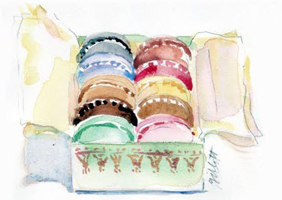
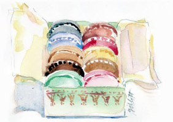
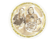
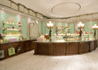
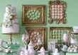
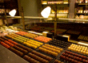
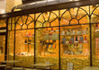
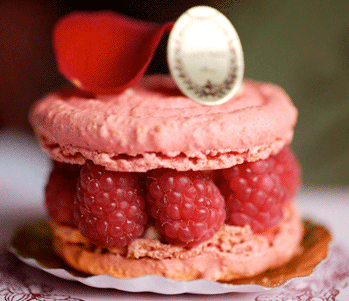

|  | Solon de the LADUREE on grand macaron du prirtemps Conmet de Voyage LADUREE |
|  | Solon de the LADUREE on grand macaron du prirtemps Conmet de Voyage LADUREE |
Pastries of an angel 가장 아름다운 도시 파리에서... |
| 1989 Laduree 회장 데이비드 홀더의 탄생. |
1871황태자의 대학에서 경영, 금융 석사를 취득. 도제 제빵사로 홀더에 합류했습니다. |
| 1991UC 버클리 대학에서 그의 석사 학위 취득. 미국으로 떠남. | 1992홀더 그룹의 국내 및 국제 개발의 방향에 임명되었다. 그 뒤 프랑스로 귀환. |
| 1993데이비드 홀더는 파리의 티 룸 Laduree 을 기획. 폴 빵집의 새로운 개념의 창조에 참가. |
1997Laduree 샹젤리제, 파리 VIII, Laduree 쁘렝땅 드 라 모드 개관. |
| 2000 그룹의 전략 담당 홀더 그룹의 부회장으로 임명. | 2002티 룸 Laduree 계좌 보나 파 르트, 파리 VI 열기.데이비드 홀더와 함께 국제적으로 개방, 글로벌 마케팅 시도. |
| 2005 고급 상점 해로드에서 런던 Laduree 오픈. | 2006 제네바 Laduree, Laduree Hausmann |
| 2007벌링턴 아케이드 (런던), 로잔, Laduree 열기. | 2008
일본 '긴자'에 Laduree의 오픈. 새로운 도전의 시작. |
| 2009베르사유, Laduree Hausmann, Ladurée Charras, 취리히 Ladurée의 왕립 재판소에서 Laduree 개설. 나고야 Ladurée의 개관. | 2010밀라노, 두바이, 리야드, 베이루트, 룩셈부르크, 이스탄불, 쿠웨이트, Laduree 상점 오픈. |
| 2011코벤트 가든, 런던시 오픈. 매디슨에있는 뉴욕의 Laduree 오픈. | 2012찰스 드골 공항에 Laduree 오픈. 신주쿠 Laduree의 개관, 스톡홀름, 스웨덴에 Laduree 개설 |
|  Women are always welcome Laduree 마카롱의 이야기는 20세기 중반 마카롱 쉘 고명을 고집했던 |